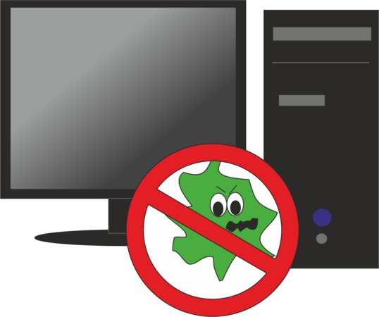
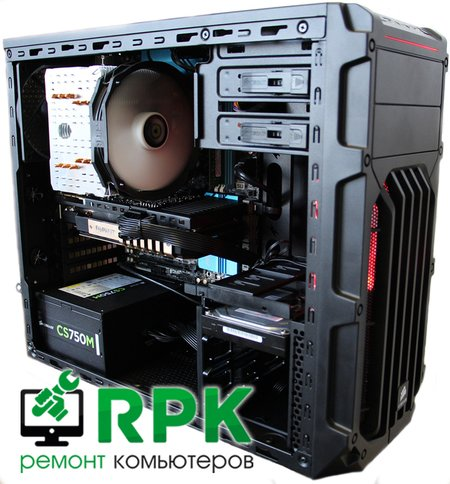
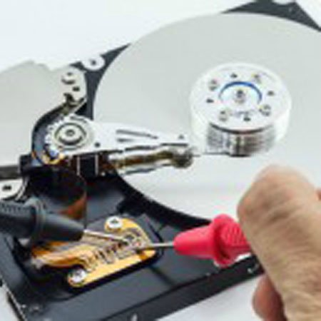

Лучшие способа очистки мусора в Ubuntu LINUXSOID Август 12, 2016
Представим себе задачу, нам нужно, очистить мусор. Чем освободить дисковое пространство в Ubuntu? Что мы сделаем в данной ситуации в Linux?
Яндекс.ДиректЧистка компьютера от вирусов РостовУзнать большеremont-computer-rnd.ruНе лечи Вирусы по одной штуке!Узнать большеудаление-вирусов.рфНужен апгрейд ПК в Ростове?Узнать большеrostov-na-dony.rpk-service.su
В отличие от Windows, где все необходимые инструменты встроены в дефрагментацию и очистка мусора почти происходит в автоматическом режиме, Ubuntu не имеет таких инструментов, но далее в материале мы рассмотрим 4 способа, с помощью которых можно освободить свободное дисковое пространство которое занято сотнями метров как файлами кеша с браузера так и кэшем apt и прочим мусором.
Хотели очистить мусор в Ubuntu, но боялись пользоваться терминалом? В материале ниже найдете детальное описание нескольких приложения с графический интерфейсом с помощью которых, вы сможете заниматься чисткой мусора, и не бояться, что вы выполняете команду в терминале и не понимаете за что она отвечает.
Представим себе задачу, нам нужно, очистить мусор. Чем освободить дисковое пространство в Ubuntu? Что мы сделаем в данной ситуации?
В отличие от Windows, где все необходимые инструменты встроены в дефрагментацию и очистка мусора почти происходит в автоматическом режиме, Ubuntu не имеет таких инструментов, но далее в материале мы рассмотрим 4 способа, с помощью которых можно освободить свободное дисковое пространство которое занято сотнями метров как файлами кеша с браузера так и кэшем apt и прочим мусором.
1. Очистка APT кеша (выполняйте это регулярно и ваша система будет дышать свободно)
Это звучит так очевидно, и все же есть все шансы, что вы еще не выполнили этого.
По умолчанию в дистрибутиве Ubuntu и всем семействе сородичей Debian, в кеше сохраняются файлы с каждого обновления, верно, при обновлении файлы загружаются, устанавливаются и далее хранятся в кеше на жестком диске, на всякий случай, а вдруг вам снова когда-нибудь понадобятся эти файлы снова. Как вариант, вы удалили определенное приложение, но не очистили кеш, далее вы захотите его снова установить, но приложение уже не будет повторно загружаться с серверов Canonical, а установится с кеша.
Это полезно лишь в том случае, если вы очень часто(регулярно) устанавливаете и удаляете приложения, это может быть полезно если вы установили приложение, но возник какой-нибудь баг и вам повторно потребовалась перенастройка / переустановка определенного пакета, как вариант вы имеете медленный интернет(плохое соединение) в таких ситуациях это очень полезно так как не придется повторно нагружать сеть которая и без этого очень слабенькая.
Но обратная сторона медали в том, что кэш пакетов APT может быстро увеличиваться от нескольких десятков до нескольких сотен мегабайт, я когда чищу, у меня иногда это достигает до 500 метров, это максимум который у меня был.
Чтобы определить сколько мегабайт APT кеша у нас собралось, выполним в терминале несколько команд:
du -sh /var/cache/apt/archives
как пример, я вот выполнил команду выше и имеем следующий выхлоп:
как видим, у меня сейчас почти 150 метров кеша APT.
Чтобы очистить APT кеш, выполните в терминале команду:
после весь кеш автоматически удалится.
APT CLEAN — это команда, которая удаляет весь apt кеш(пакеты), независимо от возраста или необходимости, все под чистую. Как я говорил выше, если у вас медленное соединение(интернет), вы можете рассмотреть вариант пропуска этого шага и ознакомиться с следующими.
2. Удаление неиспользуемых приложений
Скорее всего, вы так же как и я работаете не замечая, что у вас в сиcтеме есть много установленных приложений, которые вы никогда не используете. Возможно, вы установили чтобы посмотреть, что приложение с себя представляет, возможно для написания обзора если вы блоггер, возможно для определенной задачи и после приложение осталось висеть в системе занимая дисковое пространство.
Каким бы ни был предлог, если приложение больше не требуется, занимает свободное дисковое пространство, не бойтесь, избавляться от такого мусора и удалять.
Типичные приложения, которые вы, возможно, пожелаете удалить, например веб-браузеры (которые вы несколько раз использовали и все висит как лишний баласт Opera, Epiphany, Midori и Min), музыкальные плеера тот же Libre Office стандартные системные игры, если вы их не используете, избавляйтесь и удаляйте весь этот мусор. Я в качестве альтернативного офиса используют WPS Office соответственно мне Libre Office не нужен, занимает более сотни метров, все нужно удалять.
Для удаления вы можете использовать следующую команду:
sudo apt remove package1 package2
вот так через пробел можете перечислить в одной команде большое количество приложений и удалить их за один раз, не дружите с терминалом, пользуйтесь Центром приложений Ubuntu/Ubuntu Software.
Для удаления пакетов и зависимостей, которые больше не требуется (потому что вы удалили приложение либо другие пакеты или были установлены более новые версии которые заменили собой старые) выполните следующую команду:
sudo apt autoremove
удаление неиспользуемых пакетов из кеша:
sudo apt autoclean
в том случае если вы удалили приложение, будет хорошо, если вы сразу же очистите за ним кеш выполнив команду:
sudo apt autoremove название_приложения
установка пакетов зависимостей которые были не до конца установлены:
sudo apt -f install
если такие зависимости имеют место быть, вы увидите в консоли предложение по установке тех или иных пакетов.
3. Как удалить старые ядра(если они вам больше не нужны)
Часто устанавливая обновления и устанавливая самые новые версии ядер с помощью встроенного системного Ubuntu Software, у вас собирается порядочный список ядер, который вы наблюдаете при загрузке системы в меню Grub. Конечно, список с нескольких версий ядер всегда имеет свои преимущества, представим ситуацию, что вы установили новое ядро, но в нем возникли проблемы, которые не дают нормально работать(баги и прочие недоработки), в данном случае другая версия ядра вас спасет.
Яндекс.ДиректВосстанавливайте Данные Дёшево!Узнать большевосстановитьинфо.рф
А если нет другой версии ядра, это конечно экстренная ситуация, спасти ситуацию можно лишь установка с помощью консоли одной из версий, такое бывает редко, мне не приходилось именно спасаться через консоль устанавливая новую версию ядра, уберегало именно то, что рядом была хотя-бы еще одна из версий ядер, мне две хватало с головой.
Сейчас у меня установлено так же две версии:
советовал бы поступать так же и всегда держать для работы запасную площадку так как никогда нет гарантий, что все будет стабильно. В том случае если у вас более чем две версии ядра стоит рядом, вы можете удалить лишние выполнив в окне терминале следующую команду:
sudo apt autoremove --purge
Обратите внимание, что эта команда будет удалять только ядра, которые а) больше не нужны, и б) были установлены из архива Ubuntu с помощью обновлений системы. При установке ядра вручную или с помощью сторонних PPA, удалять вам придется вручную. Если Старых ядер не обнаружится, эта команда проверит систему не пакеты которые остались в системы после удаления приложений и предложит удалить если что-то обнаружится.
Как пример, смотрим какое ядро мы используем на текущий момент:
sudo uname -a
я вижу следующий вывод после выполнения команды:
Linux linuxsoid 4.4.0-34-generic #53-Ubuntu SMP Wed Jul 27 16:06:39 UTC 2016 x86_64 x86_64 x86_64 GNU/Linux
мыслим логически, наша версия 4.4.0-34, все что ниже можно снести.
Смотрим какие версии ядер у нас еще есть в списке, выполним команды:
dpkg --list | grep linux-image
dpkg --list | grep linux-headers
имеем следующий выхлоп:
ii linux-image-4.4.0-31-generic 4.4.0-31.50 amd64 Linux kernel image for version 4.4.0 on 64 bit x86 SMP
ii linux-image-4.4.0-34-generic 4.4.0-34.53 amd64 Linux kernel image for version 4.4.0 on 64 bit x86 SMP
ii linux-image-extra-4.4.0-31-generic 4.4.0-31.50 amd64 Linux kernel extra modules for version 4.4.0 on 64 bit x86 SMP
ii linux-image-extra-4.4.0-34-generic 4.4.0-34.53 amd64 Linux kernel extra modules for version 4.4.0 on 64 bit x86 SMP
ii linux-image-generic 4.4.0.34.36 amd64 Generic Linux kernel image
ii linux-headers-4.4.0-31 4.4.0-31.50 all Header files related to Linux kernel version 4.4.0
ii linux-headers-4.4.0-31-generic 4.4.0-31.50 amd64 Linux kernel headers for version 4.4.0 on 64 bit x86 SMP
ii linux-headers-4.4.0-34 4.4.0-34.53 all Header files related to Linux kernel version 4.4.0
ii linux-headers-4.4.0-34-generic 4.4.0-34.53 amd64 Linux kernel headers for version 4.4.0 on 64 bit x86 SMP
ii linux-headers-generic 4.4.0.34.36 amd64 Generic Linux kernel headers
на основе это списка понимаем, что можно удалить версию 4.4.0-31, для этого выполним команды:
sudo apt-get purge linux-image-4.4.0-31
sudo apt-get purge linux-headers-4.4.0-31
по ядрах это пожалуй все. Хотя есть еще одна команда которая позволит вам удалить ядра нескольких версий подряд если они идут в порядке очереди, то есть:
надеюсь принцип понятен, в данном случае чтобы нам удалить все эти 5 версий ядер, достаточно в терминале выполнить команды:
sudo apt-get purge linux-image-4.4.0-{31,32,33,34,35}
sudo apt-get purge linux-headers-4.4.0-{31,32,33,34,35}
будьте очень внимательны при удалении ядер чтобы не угробить случайно систему. После выполнения этих команд выше, ядра удалятся, загрузчик grub должен автоматически обновиться и список текущих ядер которые доступны при загрузке системы уменьшится, иногда случаются такие казусы из-за которых загрузчик grub может не обновиться, тогда это нужно выполнить вручную выполнив команды:
sudo update-grub
sudo update-grub2
это должно помочь и загрузчик обновится.
Удаление старых ядер через графический интерфейс

Выше описан консольный вариант удаления ядер Ubuntu, но так же имеется и графический вариант, знаю, что новички боятся терминала как огня, в данном случае возможно удалить используя менеджер приложений Software Center, который еще нужно установить если у вас Ubuntu 16.04.
Для установки откройте терминал (Press Ctrl+Alt+T) и выполните в терминале команду:
sudo apt-get install software-center
как вы наверное знаете(слишали), в дистрибутиве Ubuntu 16.04 LTS разработчики заменили старый центр приложений на гномовский Ubuntu Software, в котором как бы включили защиту от дурака и теперь нельзя удалять ядра воспользовавшись поиском как это было доступно с старого менеджера приложений.
Удаление ядер и кеша как браузерного так и APT и кеша эскизов через Ubuntu Tweak


Да, приложение Ubuntu Tweak справляется с удалением старых ядер, очисткой кеша эскизов, кеша браузерного, почтовых клиентов, системного кеша(APT, неиспользуемых пакетов/параметры пакетов) и все это доступно установив галочку и подтвердив удаление введя пароль администратора при запросе. Инструкция по установке Ubuntu Tweak доступна в материале — здесь.
4. Используем приложение BleachBit для очистки мусора в системе

BleachBit — это что-то на подобии CCleaner в Linux, который подобный тому же заверю что используется в Windows для глобальной чистки мусора и самое главное без вреда для системы как подобное возможно в приложениях на подобии GTKOrphan, по неумению пользоваться такими приложениями, можно угробить систему очень легко. Приложение может удалить почти весь мусор к большинству приложений которые используются в системе и имеют кеш, временные файлы которые с каждым днем работы в системе копятся и копятся набирая сотни мегабайт дискового пространства которое можно израсходовать в более востребованных целях чем для хранения системного мусора.
Утилита BleachBit может уничтожить кеши более 70 популярных приложений (в том числе и для большинства веб-браузеров); устаревшие пакеты, файлы приложений, Баш историю; что существенно облегчает работу системы.
Не удивительно, что я рекомендую установить это приложение в качестве одного из основных инструментов совместно с Ubuntu Tweak, для регулярной очистки мусора в системе.
Вы можете установить BleachBit на Ubuntu 16.04 LTS прямо из Ubuntu Software воспользовавшись поиском где введя соответствующий запрос, вы сможете установить это приложение в 2 касания мышью. Запустите вариант BleachBit as Root, установите галочки напротив пунктов приложений, кеш и временные файлы которые вы хотите очистить. В левом верхнем уголке нажмите кнопку "Предпросмотр", чтобы получить оценку, и визуальную видимость, сколько места занимают те или иные файлы(кеш, временные файлы и прочие другие), посмотрели, нажмите на кнопку "Очистить", чтобы удалить их вот и все, теперь система будет дышать в полную грудь)).
Установка аналога CCleaner, BleachBit в Ubuntu Linux
Для установки приложения BleachBit в Ubuntu, откройте терминал (Press Ctrl+Alt+T) и выполните следующую команду:
sudo apt install bleachbit
после установки приложение сможете найти либо в Dash с помощью поиска либо в меню Ubuntu — Системные утилиты — BleachBit as Root.
Выводы
В данном материале мы рассмотрели самые необходимые и распространенные способы очистки как просто временных пакетов приложений, так и кеша браузеров, APT, временные файлы, удаление ненужных устаревших пакетов, решение зависимостей, удаление устаревших ядер и прочее. Все описанное выше, поможет держать вашу систему в порядке, а это залог стабильной и долгосрочной работы системы. Если вы используете для очистки мусора другие приложения и вы имеете чем поделиться, опишите ваш способ в комментариях к материалу.